A full review of the Next.js redesign: layout, fit to the screen, alignment, spacing, imagery, congestion, accessibility and deployment weight. Every finding includes the affected page, the source file and a fix.
20 October 2026 · Tested in Chromium with agent-browser at 1440×900 (desktop), 1366×768 (small laptop) and 390×844 (mobile) · 17 routes · rules from Vercel Web Interface Guidelines and the ui-ux-pro-max checklist
6Critical
10High
10Medium
8Low / code
Fix status Updated 20 Oct 2026
All 34 findings have been addressed in code. A production build passes, and first-load JS dropped from 201–213 kB to 157–175 kB after removing GSAP and Lenis. Four items need input from the studio:
Higher-resolution photos (H1): low-res files were moved out of full-width slots, but heroes still need 2400px+ originals.
Home and Beginner's Guide heroes (H4): confirm the home hero is a real photo of the studio, and supply a real first-visit photo.
Canggu timetable: it's now HTML, but the only source was the August 2026 poster, so it's labelled “confirm current times”.
Café tags: the studio's menu marks the Protein Bowl as vegan, but it's served with tzatziki. Please check that tag.
Verdict
The design system holds together: one typeface, a consistent palette, good spacing tokens and sensible reduced-motion handling. Most problems come from three sources: imagery (low-resolution, wrongly cropped, duplicated or unsuitable photos), key information pushed out of view (schedule, map, mobile hero) and long, stacked mobile layouts that read as congested. Fixing the six critical items and the image set will make the biggest visible difference.
All findings
Ordered by severity. File references are relative to the project root.
C1 The hero headline cuts off the “g” in “Yoga” Critical
Home · all viewports · components/home/HomeHero.tsx:35-38
The reveal mask (overflow-hidden + pb-2) is shorter than the descender at leading-[0.9] and 11.5rem type, so the “g” loses its tail and reads as “Yoqa”. It is the first thing every visitor sees.
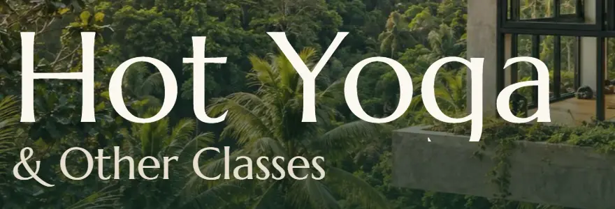
Desktop 1440×900: the descender of the “g” is cut off.
Fix: give the mask room in em units, e.g. pb-[0.18em] on the wrapper span, or use clip-path: inset(0 0 -0.25em 0) instead of overflow-hidden.
C2 Navigation becomes unreadable over the light half of split heroes Critical
All 12 class pages, Schedule, Café, Find Us, Canggu · desktop · components/layout/Header.tsx:41-48, components/ui/PageHero.tsx:18-34
The transparent header uses cream text with a gradient that fades out. On split heroes the right half is a bright photo, so “Cafe”, “Our Story” and “Find Us” sit cream-on-white (well under 2:1 contrast). The “Cafe” link even straddles the colour boundary.
Bikram Yoga page: the right-hand links disappear into the photo.
Fix: make the header solid (bg-forest) on split-hero pages, or extend a full-width dark scrim (at least 60% opacity) behind the header. You could also pass a tone prop from PageHero.
C3 The Schedule page hides the schedule below the fold Critical
/ubud-yoga-centre-class-schedule/ · all viewports · app/ubud-yoga-centre-class-schedule/page.tsx
A 78svh hero plus section padding means no class times are visible on first load: they start at roughly 880px on desktop and below the first screen on a 768px laptop and on mobile. People come to this page for one thing, and it isn't a photo.
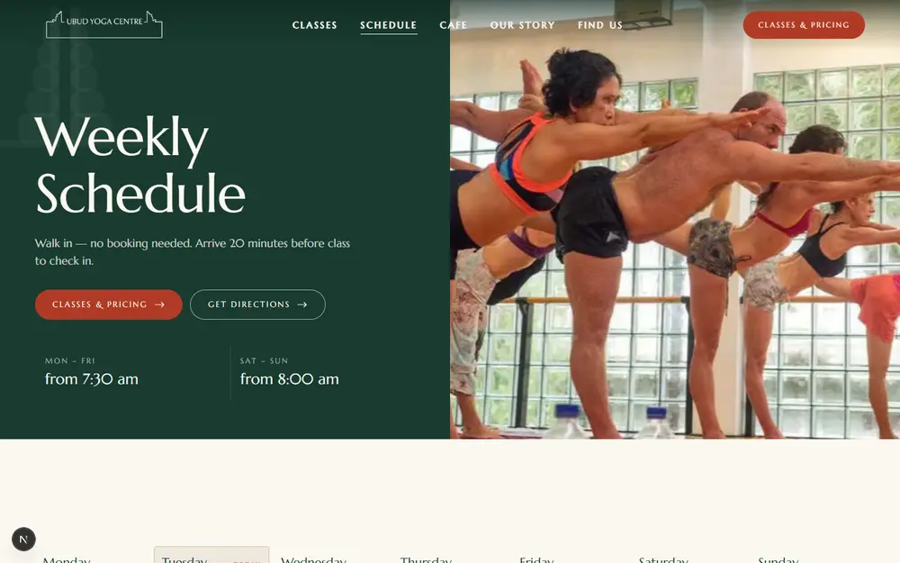
1440×900 first screen: the timetable is just below the bottom edge.
Fix: replace the hero with the compact TitleBand (about 260px), show “Today” first, and keep the timetable within the first screen. Drop the duplicate “Classes & Pricing / Get Directions” buttons here.
C4 The Find Us map advertises competitors instead of pinning the studio Critical
/our-location/ · all viewports · content/site.ts:13 (mapEmbed)
The embed is a text search, so Google shows a wide area labelled with The Yoga Barn, Ubud Yoga House, Bali Yoga Center and others, with no clear marker for Ubud Yoga Centre. Below it, two printed flyers (the van artwork and a leaflet map) carry 6–8px text that can't be read and is cut off on the right.
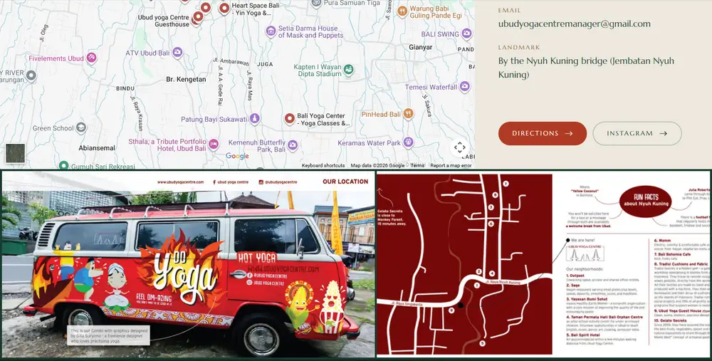
Find Us: competitor pins, no studio pin, and unreadable print artwork.
Fix: embed by Place ID (https://www.google.com/maps/embed/v1/place?q=place_id:…) or use ?q=Ubud+Yoga+Centre&z=16&output=embed with the exact business name. Replace the flyers with one clear photo of the entrance plus a short written route (“From Monkey Forest Rd, cross the Nyuh Kuning bridge…”).
C5 The mobile hero is a blurry 26% crop of a landscape photo Critical
Home · 390×844 · components/home/HomeHero.tsx:22-29
One 1672×940 landscape file fills a portrait phone screen, so only about a quarter of the image is visible and it's upscaled about 2.3× (on a 3× phone, about 7×). The result is soft and muddy behind the biggest text on the site. A hero-tablet.jpg existed but was never used.
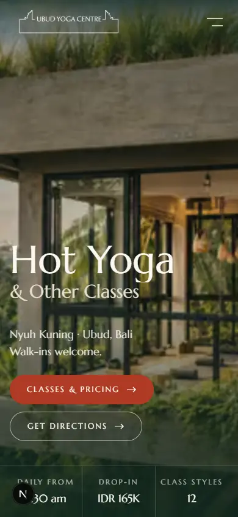
390×844: the crop shows only the building's window and is visibly soft.
Fix: art-direct with a portrait source, either via <picture> and a media="(max-width: 767px)" source, or with two Images toggled by md:hidden/hidden md:block. The portrait source should be at least 1170×2532 for retina.
C6 The Canggu schedule and price list are images of text, served blurry Critical
/welcome-to-canggu-yoga-centre/ · all viewports · app/welcome-to-canggu-yoga-centre/page.tsx:42-48, components/ui/Gallery.tsx:48
The timetable and prices are posters. Screen readers and search engines can't read them, and they can't be updated without a designer. Gallery's default sizes (25vw) is wrong for this two-column layout, so the browser fetched a 359px-wide file for a 772px-wide box: the small print turns to mush. On mobile the poster text is about 4px.
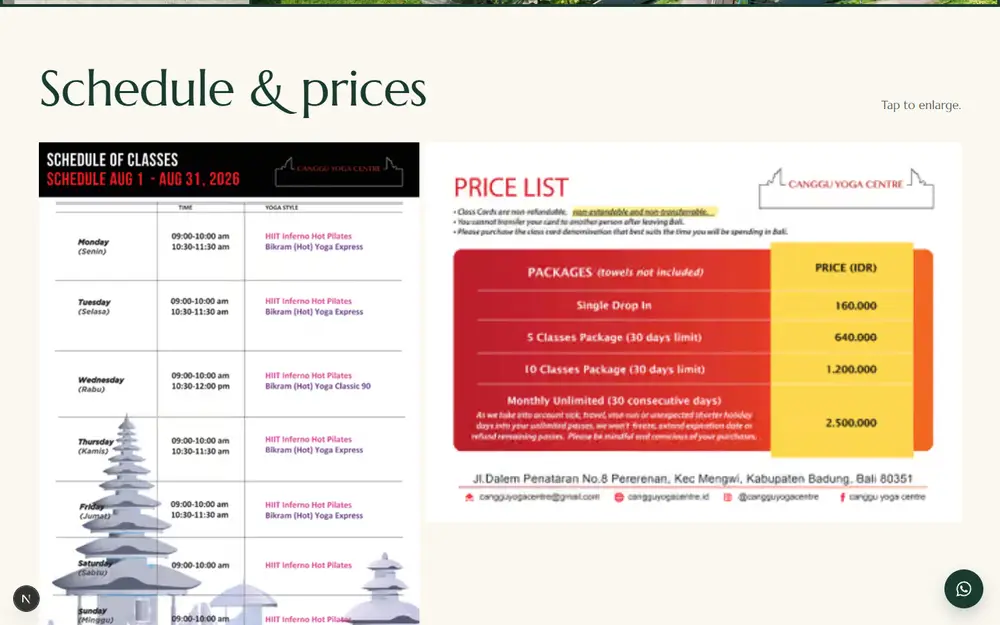
Images of text: not selectable, not translatable, and soft.
Fix: render both as HTML (reuse ScheduleBoard and PriceCards with Canggu data). Short-term, pass sizes="(min-width:768px) 50vw, 100vw" to this Gallery.
H1 Low-resolution photos stretched past their native size High
hero-desktop is 1672px wide but shown full-bleed at 1440–1920px, and needs about 2880px for retina screens.
ubudyogacentre-studio-carousel is 1280×650 but used full-bleed on the Our Story hero and the home closing CTA.
img_3701 is a 1200×450 panorama squeezed into tall bento tiles and square tiles, showing 32–40% of the image, and is pixelated.
img_1886 and img_0802 are 800×500 and shown at 750px+ on Our Story.
Class heroes (bikram-f1, inferno-hot-pilates-f1, hot-barre-f3, kundalini-yoga-f2) are 1280px video stills with compression blocking.
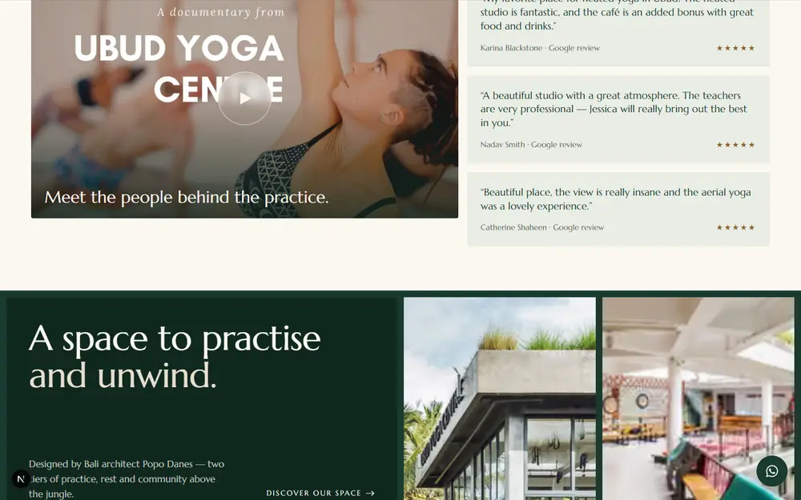
Home: pixelated bento tiles (right) next to a sharp photo.
Fix: ask the studio for camera originals (2400px or wider for heroes, 1600px for cards). If none exist, move weak images to small slots only and never full-bleed. Full-bleed needs a 1920px+ source.
H2 Landscape photos are forced into portrait class cards High
Home “Hot or regular” rail · desktop · components/home/ClassRail.tsx:61 (aspect-[3/4], lg:h-[58svh] lg:w-[22rem])
All 12 card photos are about 4:3 landscape. In 352×522 portrait frames only 42–49% of each photo shows, so faces and limbs are cut: Hot TRX is a chin and shoulder, Yin is two legs, Hatha is a torso.
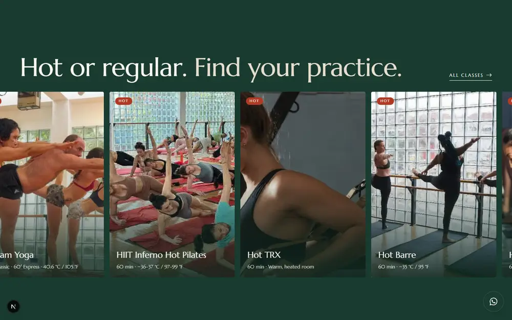
Desktop rail: the first card is clipped by the viewport and photos are cut mid-body.
Fix: use aspect-[4/3] cards (like ClassGrid), or set a per-image objectPosition focal point in content/classes.ts, or supply portrait crops.
H3 The same photos repeat, sometimes side by side High
uyc-card-shop appears twice on the homepage (day cards and bento).
ugc-8 (barre) is in the bento and again in the Instagram strip directly below, both visible on one screen.
homepage-video-poster-class is the home video poster and the Classes & Pricing hero.
p2_3 (Bikram) is a class card, the Schedule hero, a related-class card and a gallery photo.
img_3701, p10_photo_1 and nidra-class-card are reused on Home, Retreats, Space Rental and Gallery.
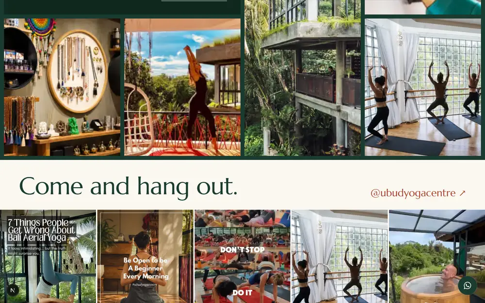
One screen: the same barre photo in the bento (top right) and the Instagram strip (fourth tile).
Fix: keep a simple image-to-page map in content/ and allow each photo once per page. The gallery is the only place for “everything”.
H4 Unsuitable images: baked-in text, screenshots, print art, generic or rendered heroes High
Home, Café, Find Us, Beginners, Gallery
Instagram strip: social graphics with headline text (“7 Things People Get Wrong About Bali Aerial Yoga”, “DON'T STOP / DO IT”, “Be Open to be A Beginner”) clash with the site's typography and look like ads.
Café photo strip: five PNG screenshots from a menu, with labels cut mid-word (“The Protein B…”, “Zucchini Pa…”). The “Before or after class” card uses a soft 516px screenshot, with white text over a bright sky.
Video poster: the YouTube thumbnail has its own “UBUD YOGA CENTRE” title. The play button sits on top of it (“CEN▶E”), and a second caption is overlaid at the bottom.
Home hero: it looks like a rendered or AI-generated image of a glass box, while the real building (Our Story, Find Us) is board-formed concrete with a green roof. Visitors who arrive and see something different may feel misled. Confirm it's a real photo or replace it.
Beginner's Guide hero: a generic stock-style mat, towel and bottle with nothing specific to the studio.
Gallery: “The Plunge” text overlay; a white-water rafting photo with no studio context.
Café: screenshot tiles with partial labels.
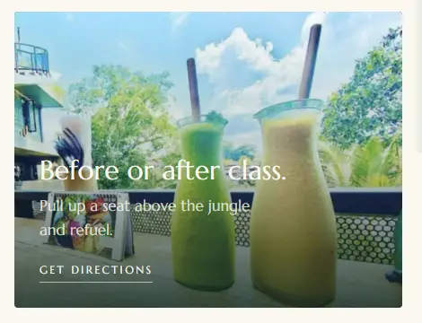
Café: soft screenshot with low-contrast overlay text.
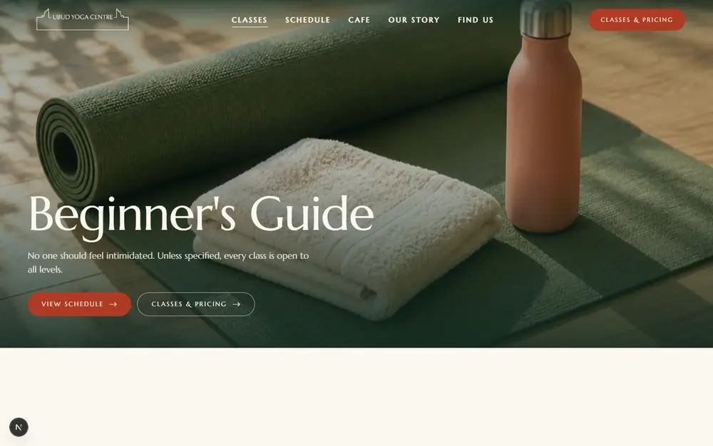
Beginner's Guide: generic imagery, nothing about this studio.
Fix: use clean photos only (no text in images), shoot real dishes on the café terrace, use a still from the film without the title as the poster, and use a real first-timer moment at the studio (check-in desk, towel rental) for Beginners.
H5 The pinned horizontal class rail hijacks about 3,000px of scrolling High
Home · ≥1024px · components/home/ClassRail.tsx:19-40, 43-44
On desktop the page stops scrolling down and slides sideways through 12 cards. There is no progress indicator or skip, and the first card begins clipped by the left edge. The section is centred inside 100svh with lg:pt-24, leaving a roughly 150px empty band above the heading while the heading almost touches the cards (about 30px).
Fix: use a native scroll-snap row with prev/next buttons and a “1 / 12” counter, or a 4×3 grid that links to the full Classes page. If the pin stays, cap it at 6 featured classes and add a visible progress bar.
H6 The floating WhatsApp button covers links and footer text High
All pages · components/layout/WhatsAppFloat.tsx:34
It sits on the “Discover our space” link on mobile, on the right-hand CTA button in every terracotta CTA band (desktop), and on the footer's “Part of the Yoga42 Indonesia family” line. Hit-testing makes the covered links untappable.
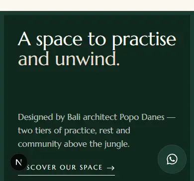
Mobile: the button covers the start of “Discover our space”.
Fix: add padding-bottom: 5.5rem to the footer on mobile, hide the float once the footer is in view (IntersectionObserver), and keep CTA rows clear of the bottom-right 80×80px.
H7 More sections follow the closing CTA, so three heavy colour bands stack up High
The terracotta CTA band is followed by the dark-green Health & Safety section and then the darker-green footer. Three saturated full-width blocks in a row feel heavy and weaken the call to action.
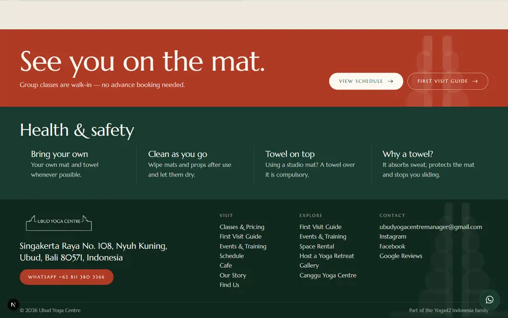
Pricing page ending: CTA, then Health & Safety, then the footer.
Fix: move <HealthSafety /> above <CtaBand /> and restyle it on a light background (bg-sand), or fold it into the FAQ accordion. The CTA band should be the last thing before the footer.
H8 Mobile pages are very long and feel congested High
Classes & Pricing is 10,609px (12.6 screens); “Our Classes” alone is 5,893px (7 screens) of full-width cards.
Home is 9,236px; “Make it your kind of day” is three 4:5 cards (1.9 screens); price cards are stacked (1.4 screens).
Café menu: 3,431px (4 screens) of continuous cards.
Footer: 963px (1.14 screens) with every link repeated in a single column.
Fix: on mobile, show class cards as a 2-column compact grid (image 1:1, name, duration), put the day cards and price cards in a horizontal snap row, make the menu an accordion by section, and collapse the footer columns into a <details> group.
H9 Price cards have no visible edge on the light pricing band High
Home pricing · all viewports · components/ui/PriceCards.tsx:14-16
Non-featured cards use bg-sand on a bg-sand section, so three of the four cards have no boundary. The prices float, the left edges don't line up with the heading, and on mobile the stacked prices run together.
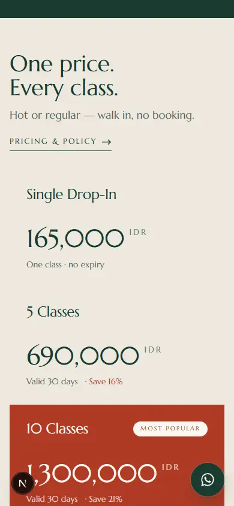
Mobile: prices without card edges, separated only by space.
Fix: use bg-cream (or a border border-forest/10) for the light tone so each card reads as a unit.
H10 The “Classes & Pricing” call to action is repeated everywhere High
Header + home hero · components/layout/Header.tsx:86-92, components/home/HomeHero.tsx:53
The header pill and the hero's primary button say the same thing side by side, and the header pill still shows on the Classes & Pricing page itself, where it links to the current page. Repeating one CTA dilutes it and leaves no room for the most-wanted action on each page (today's schedule, directions).
Fix: change the header pill to “Today's Classes” (→ schedule), hide it on the page it links to, and give the hero a single primary CTA.
M1 Text below 12px and low-contrast labels Medium
Site-wide
“Hot”, “Most popular”, “Today” and “VV” chips are 10.4px (text-[0.65rem]) in uppercase with wide tracking.
label-caps is 12px with 0.2em tracking and is used for “Full schedule”, “Watch the film” and every dt label.
Gold-deep labels on sand (“Dates”, “Teacher”, “WhatsApp”, “Email”) measure 4.41:1 at 12px, failing AA (4.5:1).
On Pricing, “IDR” measures 3.57:1, and “Valid 30 days · Save 21%” on terracotta measures 4.20:1.
The day-card numbers “01 / 02 / 03” (cream/80 over photos) are barely visible.
Fix: set a 12px minimum and 13px for uppercase labels, use text-gold-deep only on cream (not sand), and raise the IDR opacity to 85%.
M2 Copy errors Medium
“Your Daily Practise” (app/page.tsx:51): in British English the noun is “practice”; “practise” is the verb.
Under “What to bring”, the first item is “Mat included”, which isn't something to bring (content/classes.ts).
Menu legend “V vegan · VV vegetarian” (content/cafe.ts) is the reverse of the usual convention (V = vegetarian, VG = vegan) and will confuse guests.
“Cafe” in the nav and footer, but “Café” as the page heading.
The Our Story stat “Yoga42 / Indonesia family” isn't a statistic, unlike its neighbours (2004, 3).
M3 Card contents misaligned across rows Medium
Home “Make it your kind of day”: the Lifestyle Shop card has no CTA, so its title sits about 44px lower than the other two (app/page.tsx:84-118).
Class rail: “Kundalini Yoga & Meditation” wraps to two lines and pushes its meta line out of line with its neighbours. On mobile the Bikram meta breaks as “40.6 °C / 105 / °F”.
Home pricing on desktop: the “Pricing & policy” link aligns with the subtitle, not the heading.
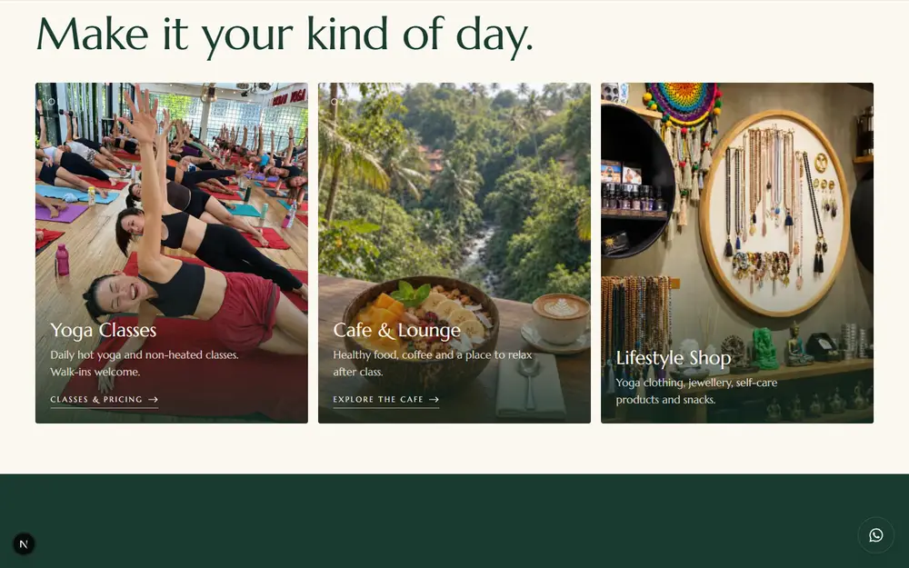
The third card's title and text sit lower than the first two.
Fix: give the shop card a CTA (“Visit the shop” → Our Story or Instagram) or reserve the CTA row height. Use text-balance and a fixed two-line title block on rail cards, and add whitespace-nowrap to temperature values.
M4 Uneven vertical rhythm and dead zones Medium
“Make it your kind of day” starts 32px below the marquee (pt-8), while the next section has about 150px of empty space above its heading.
Bento intro “A space to practise”: the heading is pinned top and the paragraph bottom, with about 200px of empty dark space between them (justify-between).
Split heroes (class pages, Café, Find Us, Canggu) leave the top half of the dark panel empty.
Our Story “Our facilities”: the left column ends about 400px above the image grid.
Pricing FAQ: “Studio policy” (5 items) sits beside “Your first visit” (8 items), leaving an empty lower-right block.
Fix: use one section rhythm (section-y top and bottom everywhere), set bento intro to justify-start gap-8, make the facilities column lg:sticky lg:top-28, and give split heroes justify-center with a smaller min-height (60svh).
M5 The gate watermark collides with the logo and titles Medium
Split heroes, mobile · components/ui/PageHero.tsx:22
The 18rem GateMark at -top-6 -left-10 sits directly behind the header logo. On mobile it shows as a grey smudge behind the H1.
Fix: move it to the bottom-right of the text panel (-right-10 -bottom-10), or hide it below lg.
M6 The desktop timetable is congested and has no legend Medium
Seven 180px columns force most class names onto two lines, and the grid is 1.22 screens tall on a 768px laptop. Hot and regular are shown only by a faint pink or green tint and border, with no legend and no filter.
Fix: add a “Hot / Regular” legend with filter chips (reuse the ClassGrid filter), drop the 2-line names with a shorter display name (“Inferno Pilates”), and put a “HOT” badge on the card instead of relying on colour alone.
M7 Footer repeats links and has small tap targets Medium
components/layout/Footer.tsx:35-36, 93
“First Visit Guide” and “Events & Training” appear in both “Visit” and “Explore”. On mobile each link is 22px tall, below the 44px minimum.
Fix: remove the duplicates from “Explore” and add py-2 (or min-h-11 inline-flex items-center) to footer links on mobile.
M8 Hero text sits over busy, bright parts of photos Medium
Home hero (right column), home closing CTA, Classes & Pricing hero, Beginner's Guide hero
“Nyuh Kuning · Ubud, Bali” sits over a bright interior window. “Your next class starts here.” crosses pale concrete. “Classes & Pricing” runs across a person's chest. The gradients are bottom-weighted, so the right and centre of the text get little scrim.
Fix: add a left-to-right or radial scrim behind text blocks, choose crops where the text area is calm, and avoid placing text over faces or bodies.
M9 Event cards and pages repeat the same information Medium
Each card shows the date three times (the poster, a “12 JUL” badge and “July 12–14, 2027”) and the title twice (poster and H2). The event page hero is 1.11 screens tall on a laptop because the full poster sits beside the H1.
Fix: use a clean photo of Gabi Walters instead of the poster, keep the date badge or the date line (not both), and cap the hero image at max-h-[70svh].
M10 Mobile split heroes push the photo below a full screen of text Medium
Class pages, Schedule, Café, Find Us · 390px
On phones the text panel (title, lead, two stacked buttons, a 2×2 stats grid) fills the first screen and the photo starts below it, cropped to min-h-[56vw], which cuts off heads in the Bikram photo. The Bikram hero is 1.07 screens before any content.
Fix: on mobile, put the photo first as a 16:10 band (about 240px), then the title and one primary button. Put the buttons side by side and move the stats grid below the fold.
L1 Definition list in the wrong order Low
app/our-story/page.tsx:43-46
<dd> is rendered before <dt>, which is invalid, so screen readers announce the value before its label.
Fix: render dt first and reorder visually with flex-col-reverse.
Every Reveal starts at opacity: 0, and today's classes list is opacity-0 until hydration. On slow mobile connections whole sections flash in late, and with JavaScript disabled they never appear.
Fix: animate only transform (keep opacity at 1) or gate the hidden state behind a .js class set in <head>. Server-render “Today” using Bali time at build or request time.
The mobile menu, gallery lightbox and video modal use autoFocus on close but don't keep Tab inside the dialog or return focus to the trigger. The menu has no current-page indicator.
Fix: use the native <dialog> with showModal(), which gives focus containment and Escape for free, and restore focus on close.
L4 Five links with the same accessible name Low
app/page.tsx:225
All five Instagram tiles are announced as “Ubud Yoga Centre on Instagram”.
Fix: make the strip one link, or describe each photo (“Aerial class on Instagram”).
L5 The class filter isn't kept in the URL Low
components/classes/ClassGrid.tsx:12
Choosing “Hot” can't be shared or restored with Back.
Fix: sync with ?type=hot via useSearchParams, and link “Hot” chips elsewhere straight to it.
L6 The marquee can't be paused on touch screens Low
components/ui/Marquee.tsx:16
It pauses on hover only. Touch users can't stop it (WCAG 2.2.2 applies to motion lasting more than 5 seconds).
Fix: pause it when off-screen and add a small pause button, or make it static on touch devices.
L7 The parallax zoom makes Next fetch undersized images Low
Images are rendered at 108% scale but requested for 100%, so the browser picks the next-smaller variant (for example a 1254px file for a 1555px box at 1440px).
Fix: pass sizes="110vw" (or 55vw for split heroes) wherever Parallax wraps an Image.
L8 Three animation libraries for one marketing site Low
package.json
GSAP + ScrollTrigger, Motion and Lenis all ship to every page (First Load JS 201–213 kB). Motion handles reveals and dialogs, and GSAP only parallax and the rail pin.
Fix: pick one. Motion's useScroll covers parallax, and if the rail pin goes (H5), GSAP and Lenis can be removed.
Fit-to-screen measurements
Section height divided by viewport height, measured in the browser after all reveal animations had run. Red cells are taller than one screen. Long content such as the menu or gallery can scroll, but marketing sections should fit within one screen each.
Page
Section
Desktop 1440×900
Laptop 1366×768
Mobile 390×844
Recommendation
Home
Your Daily Practise
0.86
1.00
1.31
Show 4 classes plus “+3 more” on mobile
Home
Make it your kind of day
0.86
0.98
1.87
Horizontal snap row on mobile
Home
Hot or regular (rail)
1.00 + 3,000px pin
1.00 + pin
0.76
Remove the pin (H5)
Home
One price. Every class.
0.62
0.72
1.36
2×2 grid on mobile
Home
What our students say
0.80
0.93
1.20
Reviews as a swipe row
Home
A space to practise (bento)
0.95
0.95
1.07
Close the dead space (M4)
All pages
Footer
0.37
0.44
1.14
Collapse columns on mobile (H8, M7)
Classes & Pricing
Passes & Pricing
0.57
0.66
1.33
2×2 grid on mobile
Classes & Pricing
Our Classes
2.59
2.98
6.98
2-column compact cards on mobile, 4 columns at ≥1280px
Classes & Pricing
Your first visit / Studio policy
0.81
0.95
1.28
Fine as an accordion; merge the two lists
Class page (Bikram)
Hero
0.78
0.81
1.07
Photo-first mobile hero (M10)
Class page (Bikram)
About this class
0.83
0.97
1.68
Move “When it runs” to the top on mobile
Class page (Bikram)
What to expect / Other classes
0.54 / 0.64
0.66 / 0.73
1.20 / 1.21
Swipe rows on mobile
Café
Menu
1.54
1.80
4.07
Tabs or accordion per menu section
Schedule
This week
1.00 (below fold)
1.22
0.98
Remove the hero (C3)
Our Story
Our facilities
1.12
1.28
1.21
Smaller image grid, sticky text
Find Us
Get in touch
0.60
0.73
1.24
Map height 50svh on mobile
Canggu
Schedule & prices
1.18
1.34
1.19
Render as HTML (C6)
Event
Hero
0.97
1.11
1.27
Cap the poster or photo height (M9)
Beginner's Guide
Before you come / In the studio
0.61 / 0.55
0.71 / 0.68
1.35 / 1.39
Accordion on mobile
Host a Retreat
What we can do for you
1.02
1.16
1.55
Tighter chip lists
Full page heights on mobile: Home 9,236px · Classes & Pricing 10,609px · Café 6,719px · Bikram 5,997px · Beginner's Guide 4,936px. No page has horizontal overflow at any tested width, and every page has exactly one H1 with no skipped heading levels.
Image inventory: what to replace
Native size compared with how large the image is displayed. “Visible” is the share of the photo left after object-cover cropping.
File
Native
Where
Problem
Action
hero-desktop
1672×940
Home hero, gallery
Upscaled on desktop; 26% visible on mobile; looks rendered
Real photo, 2880px+, plus a portrait crop
ubudyogacentre-studio-carousel
1280×650
Our Story hero, home CTA
Full-bleed at 1440px+ is soft; 30–39% visible on mobile
2400px original
img_3701… (café panorama)
1200×450
Home bento, Space Rental, Retreats
32–40% visible in tall or square tiles; pixelated
Use only in wide 8:3 slots
img_1886…, img_0802…
800×500
Bento, Our Story
Shown at 750px+
Higher-resolution originals
Class card photos p2_3 … p15, nidra-class-card
~950×690
Home rail (3:4)
42–49% visible, heads cut
Use 4:3 cards or portrait crops
p4_8 (Hot TRX)
552×399
Rail, grid, related
Undersized everywhere
Replace
Class heroes *-f1/f2/f3
1280×720
Class split heroes
Video stills with compression artefacts
Photograph each class
image_2026-09-12_* (5 PNGs)
482–672px
Café strip and card, gallery
Screenshots with cropped labels
Real food photos
ugc-2/3/5/9
720–1080px
Instagram strip
Social graphics with headline text
Clean photos or a live feed widget
UYC_Location_*
2250 / 1123px
Find Us
Print artwork with unreadable text
Entrance photo plus written route
canggu-* posters
3508 / 2481px
Canggu
Images of text, served at 359px
HTML content (C6)
hot-pilates-level-*
1122×1402
Events, event page
Poster duplicates title and dates
Teacher photo
uyc-first-visit-essentials
1200×800
Beginner's hero
Generic stock-style image; 39% visible on mobile
Real studio moment
Vercel size optimisation Done
These changes are already applied in the project. A production build (next build) passes: 29 static pages, unchanged JS size.
Source uploaded to Vercel (excl. node_modules/.next)
≈ 17 MB
≈ 6.0 MB
Optimised-image variants Vercel can generate per image
2 formats × 16 widths = 32
1 format × 8 widths = 8
What changed:
scripts/optimize-images.mjs (new) re-encoded every photo to WebP (quality 78, max 1920×2400, never upscaled) and rewrote all references in app/, components/ and content/. It's safe to run again after adding new photos.
The originals are kept, not deleted, in image-originals/ (git- and Vercel-ignored), including the two unused files hero-tablet.jpg and photo_2026-09-21_22-02-36.jpg.
content/image-sizes.json was regenerated with the new file names and dimensions.
public/images/og.jpg (new) is a 1200×630 JPEG share image, so link previews keep working on platforms that reject WebP. app/layout.tsx now points to it.
next.config.ts: WebP-only output, 5 device widths and 3 image widths, a single quality (75) and a 31-day cache TTL. This keeps Vercel's image-optimisation cache and usage small.
.vercelignore (new) excludes .next, node_modules, *.tsbuildinfo, content/raw, image-originals and audit from CLI uploads. .gitignore now also ignores image-originals.
Removed the unused playwright dev dependency (about 19 MB less to install on every Vercel build).
When you replace images per H1 and H4, drop the new originals into public/images/, run node scripts/optimize-images.mjs && node scripts/image-sizes.mjs, and they will be sized and converted the same way.